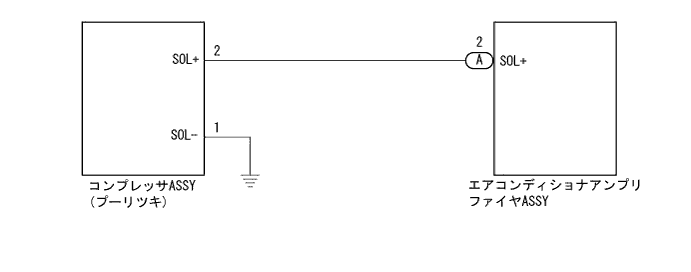
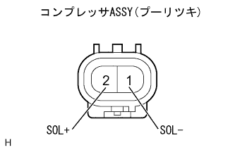
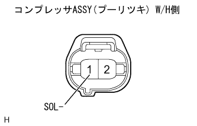
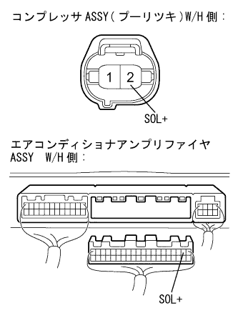

DTC B1451/51 Externally Variable Compressor Solenoid Malfunction |
| DTC No. | Detection Condition
| Inspection Area |
|---|---|---|
| B1451/51 |
|
|

| Step 1 | Read TaSCAN Data (Externally Variable Output Current Value) |
Using SST, inspect the ECU Data Monitor by following the screen instructions.
| Item Name [Item Symbol] | Condition | Reference Value |
|---|---|---|
| External Variable Output Current Value [OROA] | When compressor assembly (w/ pulley) is operating | Displayed in range 0A (minimum capacity) to 1A (maximum capacity) |
| Result | Proceed to |
|---|---|
| ECU Data Monitor reference values are abnormal | A |
| ECU Data Monitor reference values are normal | B |
|
| ||||
| A | |
| Step 2 | Inspect Compressor Assembly (with Pulley) |
Disconnect the compressor assembly (w/ pulley) connector.
 |
Using SST (Toyota electrical tester), measure the resistance between the connector terminals.
| Tester Connection (Terminal Symbol) | Condition | Standard |
|---|---|---|
| 1(SOL+) - 2(SOL-) | Always (compressor temperature 25°C) | 10.1 to 11.1Ω |
|
| ||||
| OK | |
| Step 3 | Inspect Wire Harness and Connector (Compressor Assembly (with Pulley) - Body Ground) |
for reference. |
Using SST (Toyota electrical tester), measure the resistance between the terminals of the compressor assembly (w/ pulley) vehicle side wire harness connector.
| Tester Connection (Terminal Symbol) | Condition | Standard |
|---|---|---|
| 1 (SOL-) - Body ground | Always | Below 1 Ω |
|
| ||||
| OK | |
| Step 4 | Inspect Wire Harness and Connector (Compressor Assembly (with Pulley) - Air Conditioner Amplifier Assembly) |
for reference.Disconnect connector A of the air conditioner amplifier assembly.
 |
Using SST (Toyota electrical tester), measure the resistance between the connector terminals of the vehicle wire harness and between the terminals and body ground. (For Terminals of ECU, see)
| Tester Connection | Condition | Standard |
|---|---|---|
| 2 (SOL+) - Body ground | Always | 10k Ω or higher |
| 2(SOL+) - A2(SOL+) | Always | Below 1 Ω |
|
| ||||
| OK | ||
| ||